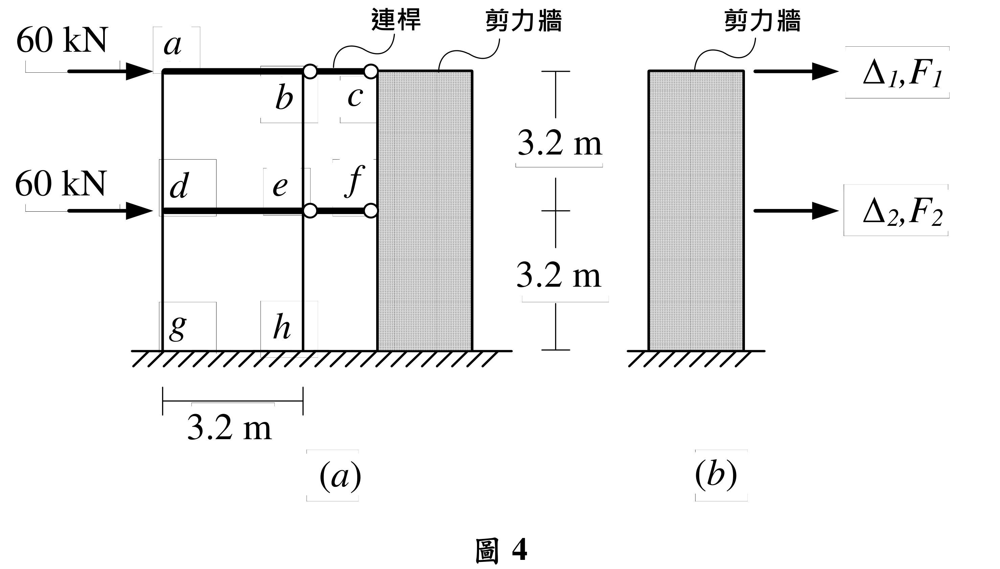
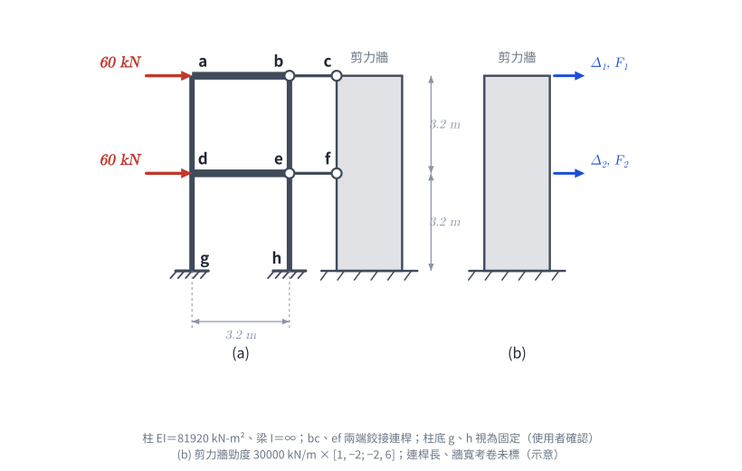

📄 題目正本（考卷原文、附圖與判讀清單；不含解法）
SA-2020-4 題目正本
本檔只記錄考卷上寫了什麼、圖上畫了什麼，不含任何解法。解析見同資料夾
SA-2020-4.md。
判讀清單經使用者確認前，狀態為「待確認」；確認後本檔原則上不再修改（改動須回考卷原圖並記 log）。
| 項目 | 內容 |
|---|---|
| 考卷 | raw/exams/SA-2020_結構學.pdf，第 2 頁（頁次 2－2），第四題（圖 4） |
| 考年 | 2020（民國 109 年）專技高考結構工程技師「結構學」 |
| 配分 | 25 分 |
| 附圖 | SA-2020-4-fig-2.png（本次從考卷擷取 500 dpi；既有 SA-2020-4-fig-1.png 保留） |
| 判讀狀態 | 已確認（2026-11-07 使用者確認；原轉錄：2026-11-07 轉錄；PyMuPDF 110 dpi 整頁＋300–400 dpi 局部放大（附圖為向量圖）；盲讀於開啟解析前完成） |
1. 考卷原文（逐字）
四、如圖4(a)所示之二層樓平面結構，各樓層承受相同的水平力60 kN，梁柱構架與剪力牆在各樓層之間設置bc及ef 連桿傳遞水平軸力。構架梁柱桿件的彈性模數都為E，另構架之柱桿件斷面慣性矩都為I，且EI = 81920 kN-m²，而構架之梁桿件斷面慣性矩為無限大。如圖4(b)所示剪力牆有二個自由度，已知剪力牆之力{F₁, F₂}與位移{Δ₁, Δ₂}關係式，採用勁度矩陣表示如下：
$$\begin{Bmatrix}F_1\\F_2\end{Bmatrix}=(30000\ \text{kN/m})\begin{bmatrix}1&-2\\-2&6\end{bmatrix}\begin{Bmatrix}\Delta_1\\\Delta_2\end{Bmatrix}$$
。不考慮連桿及構架梁柱桿件的軸向變形，求圖4(a)二層樓結構之各連桿的軸力、一樓剪力牆的基底剪力、eh柱桿件的端點彎矩及剪力。（25分）
2. 考卷給的公式、附表與參數
- 給定：柱 EI＝81920 kN-m²（kN-m 的平方，非係數 2）；梁 I＝∞。
- 給定：剪力牆勁度矩陣 30000 kN/m × [[1, −2], [−2, 6]]，Δ₁、F₁ 在頂層，Δ₂、F₂ 在一樓。
- 考卷沒有給剪力牆的 EI 或尺寸（由勁度矩陣代表）。
- 卷首注意事項：㈠可以使用電子計算器。㈡不必抄題，作答時請將試題題號及答案依照順序寫在試卷上，於本試題上作答者，不予計分。㈢本科目除專門名詞或數理公式外，應使用本國文字作答。
- 考試時間：2 小時。代號 00340，頁次 2－1、2－2。
3. 附圖

證據圖 SA-2020-4-fig-2.png（500 dpi，自考卷擷取；舊證據圖 SA-2020-4-fig-1.png 有游標雜訊，保留不改）
圖面文字照錄：60 kN、60 kN、a、b、c、d、e、f、g、h、連桿、剪力牆、3.2 m、3.2 m、3.2 m、(a)、剪力牆、Δ1,F1、Δ2,F2、(b)、圖 4
4. 判讀清單
| # | 項目 | 判讀 | 圖上／題文依據 | 把握 |
|---|---|---|---|---|
| 1 | 構架節點 | 頂層 a（左）、b（右）；一樓 d（左）、e（右）；柱底 g（左）、h（右） | 400 dpi 放大：b、e 標字在右柱內側 | 確定 |
| 2 | 梁 | ab、de，I＝∞（剛性） | 題文＋粗線 | 確定 |
| 3 | 柱 | ad、dg、be、eh，EI＝81920 kN-m² | 題文；300 dpi 放大確認 m 的上標 2 為單位指數 | 確定 |
| 4 | 柱底 g、h | 落在地面剖線，圖面無支承符號；視為固定端 | 圖面 | 確定（解讀）；使用者確認 |
| 5 | 連桿 | bc（頂層）、ef（一樓），兩端圓圈＝鉸接，只傳軸力，不計軸向變形 | 題文＋圖面 | 確定 |
| 6 | 尺寸 | 層高 3.2 m、3.2 m；構架跨度 3.2 m；連桿長度沒有標 | 尺寸線 | 確定 |
| 7 | 載重 | 頂層 a、一樓 d 各 60 kN 水平向右 | 箭頭 | 確定 |
| 8 | 剪力牆勁度 | {F₁,F₂}＝30000 kN/m·[[1,−2],[−2,6]]{Δ₁,Δ₂}；1 號自由度在頂層、2 號在一樓，正向向右 | 題文式＋圖 4(b) | 確定 |
| 9 | 考卷沒有給 | 連桿長度、剪力牆尺寸／EI、柱底支承符號 | 題文 | 確定 |
| 10 | 所求 | 各連桿軸力、一樓剪力牆基底剪力、eh 柱端點彎矩與剪力 | 題文 | 確定 |
| 11 | 證據圖 | 既有 fig-1 頂端夾帶題文殘字、左側有游標；另擷取 500 dpi 乾淨版 fig-2 | 縮圖總表 | 確定 |
轉錄：2026-11-07（SA 剩餘單元（U1-2 尾段、U2-5、U3-1、U3-2）題目正本推廣・批 1）
確認：2026-11-07 使用者確認
考題編號：SA-2020-4
主分類： SA-U3-2 建築結構系統分析
副分類： 無
分析法： 矩陣位移法 / 剛架與剪力牆互制
標籤： 剛架與剪力牆互制 矩陣分析 剪力建築
1. 題目（考卷原文見題目正本）
考卷原文、公式／附表、附圖與判讀清單（已確認）見
SA-2020-4-problem.md。本節只列解題時最容易讀錯的地方與本解使用的記號；題意以題目正本為準。

重繪自考卷附圖，依判讀清單重繪。攔：Δ₁、Δ₂ 的樓層對調、把連桿當成可傳彎矩。
常見誤讀
| 項目 | 正確判讀 | 常見誤讀 |
|---|---|---|
| 剪力牆自由度 | 1 號在頂層、2 號在一樓 | 1 號在一樓 |
| 柱 EI | 81920 kN-m²（「m²」的 2 是單位指數） | 讀成 2EI |
| 柱底 | g、h 視為固定（圖面無支承符號；使用者確認） | 鉸支 |
本解記號： 構架節點 a、b、d、e、g、h，ab、de 為剛性梁；柱高 3.2 m；連桿軸力 $N_{bc}$、$N_{ef}$ 以拉為正；位移、力向右為正。
2. 考題核心精神與出題者意圖 (Core Concepts & Examiner's Intent)
這是一道設計極度巧妙的「剛架與剪力牆互制 (Frame-Shear Wall Interaction)」考題。
由於題目特別聲明「構架之梁桿件斷面慣性矩為無限大」，這表示剛架的行為是標準的剪力建築 (Shear Building)。
出題者給定了剪力牆的勁度矩陣，並暗示我們透過組合剛架與剪力牆的系統勁度矩陣來求解各樓層的側移量。
最令人驚豔的是這題的數字設計：當你算出剛架與剪力牆的整體位移後，會發現系統的變形特徵讓某個連桿的受力直接歸零！這正是出題老師精心調配參數的結果，藉此考驗考生對側力分配與矩陣力學的掌握程度。
3. 解題戰略地圖與陷阱分析 (Strategic Roadmap & Trap Analysis)
解題步驟：
- 建立剛架勁度矩陣： 利用剪力建築公式 $k = \sum 12EI/h^3$ 計算剛架各樓層的側向勁度，並組裝出剛架勁度矩陣 $[K_f]$。
- 組裝總勁度矩陣： 系統總勁度矩陣 $[K] = [K_f] + [K_w]$。
- 求解樓層位移： 建立系統位移方程式 $[K]\{\Delta\} = \{P\}$，解出二樓位移 $\Delta_1$ 與一樓位移 $\Delta_2$。
- 回推各構件受力：
- 連桿軸力：計算剪力牆在各樓層分擔的水平力 $[K_w]\{\Delta\}$，即為連桿傳遞的軸力。
- 牆基底剪力：剪力牆各層受力之總和。
- 柱端彎矩剪力：利用柱兩端的相對側移計算單一柱的剪力與彎矩。
陷阱分析：
- 陷阱一：樓層標號混淆。 題目給的剪力牆勁度矩陣，對角線數值為 $1$ 與 $6$。根據結構常識，底層的勁度必定遠大於頂層，因此可判斷 $\Delta_1, F_1$ 代表頂層 (2樓)，$\Delta_2, F_2$ 代表底層 (1樓)。若標號顛倒將無法得分。
- 陷阱二：忽視「每層樓有兩根柱子」。 剛架的樓層側向勁度是該層所有柱子側向勁度的總和。本題單跨剛架每層有兩根柱子，故 $K_i = 2 \times (12EI/h^3)$，漏乘 2 會導致後續所有計算全錯。
- 陷阱三：柱端彎矩的分配與方向。 剪力建築的柱兩端不旋轉，彎矩公式為 $M = 6EI\Delta/h^2$（非 $3EI/h^2$ 或傾角變位公式），且兩端彎矩大小相等、方向相同，以抵抗側移產生之轉角。
3.5 變數層次分析 (Variable Hierarchy Analysis)
複習提示：第一次解題後，在每個卡住的知識點旁標記
⚠；第二次複習時只看有⚠的項目。
最終目標
求出各連桿軸力、牆基底剪力、特定柱的端點剪力與彎矩
本題關鍵公式（依計算順序）
$\boxed{\cdot}$ = 需由前步驟推導，非題目直接給定的變數
$$\text{Step 1 (剛架勁度): } K_{fi} = 2 \times \frac{12EI}{h^3} \Rightarrow [K_f] = \begin{bmatrix} K_{f2} & -K_{f2} \\ -K_{f2} & K_{f1}+K_{f2} \end{bmatrix}$$
$$\text{Step 2 (系統矩陣): } [K_{total}] = \boxed{[K_f]} + [K_w]$$
$$\text{Step 3 (求解位移): } \boxed{[K_{total}]} \begin{Bmatrix} \Delta_1 \\ \Delta_2 \end{Bmatrix} = \begin{Bmatrix} P_1 \\ P_2 \end{Bmatrix} \Rightarrow \text{解出 } \boxed{\Delta_1}, \boxed{\Delta_2}$$
$$\text{Step 4 (目標力): } \begin{Bmatrix} F_{w1} \\ F_{w2} \end{Bmatrix} = [K_w] \begin{Bmatrix} \boxed{\Delta_1} \\ \boxed{\Delta_2} \end{Bmatrix} \text{ (連桿軸力)}, \quad V_{eh} = \frac{12EI}{h^3}\boxed{\Delta_2}, \quad M_e = \frac{6EI}{h^2}\boxed{\Delta_2}$$
L1：題目直接給定
看到題目就能讀出的數字，不需要任何公式。
| 符號 | 數值 | 說明 |
|---|---|---|
| $EI$ | 81920 | 柱彈性模數與慣性矩乘積 |
| $h$ | 3.2m | 樓層高度 |
| $P_1, P_2$ | 60 kN | 各樓層外加水平載重 |
| $[K_w]$ | 30000 $\begin{bmatrix} 1 & -2 \\ -2 & 6 \end{bmatrix}$ | 剪力牆勁度矩陣 |
L2：需知識點推導
需要知道公式名稱與適用條件，套入 L1 即可算出。
Step 1：單柱與樓層側向勁度
| 符號 | 公式/來源 | 卡關? |
|---|---|---|
| $k_c$ | $12EI/h^3$ (因梁無限剛，為剪力建築柱) | |
| $K_{fi}$ | $2 \times k_c$ (每層有 2 根柱) |
Step 4：內力計算
| 符號 | 公式/來源 | 卡關? |
|---|---|---|
| $V_{w\_base}$ | $F_{w1} + F_{w2}$ (牆基底剪力) | |
| $M_e, M_h$ | $6EI\Delta_2/h^2$ (剪力建築柱端彎矩) |
L3：深層知識（不懂就卡住）
| 知識點 | 說明 | 卡關? |
|---|---|---|
| 自由度編號判斷 | $[K_w]$ 中 $K_{22} = 6 > K_{11} = 1$，底部牆剛度必大於頂部，故 $\Delta_1$ 為二樓，$\Delta_2$ 為一樓。 | |
| 連桿受力意義 | 連桿即為牆與剛架的介面。連桿受力 = 牆在該層分配到的側力 $F_w$。 | |
| 側移方向與彎矩符號 | 結構受向右側移，柱向右傾倒 (S型)，為維持端點零旋轉，兩端均須提供逆時針 (CCW) 之束制彎矩。 |
4. 步驟化詳細計算過程 (Step-by-Step Detailed Calculation)
Step 1: 建立剛架的勁度矩陣 $[K_f]$
已知柱的 $EI = 81920 \text{ kN-m}^2$，樓層高度 $h = 3.2 \text{ m}$。
對於剪力建築，單根兩端不旋轉的柱側向勁度為：
$$ k_c = \frac{12 EI}{h^3} = \frac{12 \times 81920}{3.2^3} = \frac{983040}{32.768} = 30000 \text{ kN/m} $$
每層樓有兩根柱子 (例如 2 樓有 $ad, be$；1 樓有 $dg, eh$)，故各樓層的側向勁度為：
$$ K_{f1} = 2 \times 30000 = 60000 \text{ kN/m} \quad (\text{1樓側向勁度})$$
$$ K_{f2} = 2 \times 30000 = 60000 \text{ kN/m} \quad (\text{2樓側向勁度})$$
定義 $\Delta_1$ 為 2 樓位移 (頂層)，$\Delta_2$ 為 1 樓位移 (底層)。
剛架的勁度矩陣 $[K_f]$ 建立規則為：$K_{11} = K_{f2}$ (頂層自身)，$K_{22} = K_{f1} + K_{f2}$ (底層承受兩層)，非對角線為 $-K_{f2}$：
$$ [K_f] = \begin{bmatrix} 60000 & -60000 \\ -60000 & 120000 \end{bmatrix} = 30000 \begin{bmatrix} 2 & -2 \\ -2 & 4 \end{bmatrix} \text{ kN/m} $$
Step 2: 組合整體系統勁度矩陣 $[K_{total}]$
題目已知剪力牆的勁度矩陣 $[K_w]$ 為：
$$ [K_w] = 30000 \begin{bmatrix} 1 & -2 \\ -2 & 6 \end{bmatrix} \text{ kN/m} $$
整體系統勁度矩陣為剛架與剪力牆之和：
$$ [K_{total}] = [K_f] + [K_w] = 30000 \left( \begin{bmatrix} 2 & -2 \\ -2 & 4 \end{bmatrix} + \begin{bmatrix} 1 & -2 \\ -2 & 6 \end{bmatrix} \right) = 30000 \begin{bmatrix} 3 & -4 \\ -4 & 10 \end{bmatrix} \text{ kN/m} $$
Step 3: 求解各樓層側移量
系統承受的外力向量 $\{P\}$ 為 (2樓與1樓皆受 60 kN 向右力)：
$$ \begin{Bmatrix} P_1 \\ P_2 \end{Bmatrix} = \begin{Bmatrix} 60 \\ 60 \end{Bmatrix} \text{ kN} $$
建立系統方程式 $[K_{total}] \{\Delta\} = \{P\}$：
$$ 30000 \begin{bmatrix} 3 & -4 \\ -4 & 10 \end{bmatrix} \begin{Bmatrix} \Delta_1 \\ \Delta_2 \end{Bmatrix} = \begin{Bmatrix} 60 \\ 60 \end{Bmatrix} $$
化簡 (兩邊同除以 60)：
$$ 500 \begin{bmatrix} 3 & -4 \\ -4 & 10 \end{bmatrix} \begin{Bmatrix} \Delta_1 \\ \Delta_2 \end{Bmatrix} = \begin{Bmatrix} 1 \\ 1 \end{Bmatrix} $$
解聯立方程式：
行列式 $det = 3 \times 10 - (-4 \times -4) = 30 - 16 = 14$
$$ \begin{Bmatrix} \Delta_1 \\ \Delta_2 \end{Bmatrix} = \frac{1}{500 \times 14} \begin{bmatrix} 10 & 4 \\ 4 & 3 \end{bmatrix} \begin{Bmatrix} 1 \\ 1 \end{Bmatrix} = \frac{1}{7000} \begin{Bmatrix} 14 \\ 7 \end{Bmatrix} = \begin{Bmatrix} 0.002 \text{ m} \\ 0.001 \text{ m} \end{Bmatrix} $$
得知側移量為：2樓 $\Delta_1 = 2 \text{ mm}$，1樓 $\Delta_2 = 1 \text{ mm}$。
Step 4: 目標力與彎矩計算
(1) 各連桿的軸力 ($bc$ 及 $ef$)
連桿傳遞的軸力，即為剪力牆在各樓層分配到的水平載重 $\{F_w\}$：
$$ \begin{Bmatrix} F_{w1} \\ F_{w2} \end{Bmatrix} = [K_w] \begin{Bmatrix} \Delta_1 \\ \Delta_2 \end{Bmatrix} = 30000 \begin{bmatrix} 1 & -2 \\ -2 & 6 \end{bmatrix} \begin{Bmatrix} 0.002 \\ 0.001 \end{Bmatrix} $$
- 頂層 (2樓) 剪力牆受力：$F_{w1} = 30000 (1 \times 0.002 - 2 \times 0.001) = \mathbf{0 \text{ kN}}$
- 底層 (1樓) 剪力牆受力：$F_{w2} = 30000 (-2 \times 0.002 + 6 \times 0.001) = 30000 (0.002) = \mathbf{60 \text{ kN}}$ (向右)
這意味著外力 60 kN 在頂部全由剛架承受，在底部全由剪力牆承受！
因此 $bc$ 連桿不傳遞任何力量；而 $ef$ 連桿將剛架上的力傳遞給剪力牆，使得連桿自身承受壓力。
- 答案：$\boxed{bc \text{ 連桿軸力： } 0 \text{ kN}}, \quad \boxed{ef \text{ 連桿軸力： } 60 \text{ kN} \text{ (壓力)}}$
(2) 一樓剪力牆的基底剪力
剪力牆的基底剪力即為其所承受的所有水平外力總和：
- 答案：$\boxed{V_{base\_wall} = F_{w1} + F_{w2} = 0 + 60 = \mathbf{60 \text{ kN}}}$
(3) $eh$ 柱桿件的端點彎矩及剪力
$eh$ 柱位於 1 樓，其兩端點的相對側移為 $\Delta_2 = 0.001 \text{ m}$。因梁慣性矩無限大，柱兩端皆無旋轉。
-
剪力 ($V_{eh}$)：
$$ \boxed{V_{eh} = k_c \times \Delta_2 = 30000 \times 0.001 = \mathbf{30 \text{ kN}}}$$ -
端點彎矩 ($M_e, M_h$)：
柱受側移變形呈現反曲點在中央的 S 型，兩端需施加逆時針的束制彎矩以維持零轉角：
$$ \boxed{M_e = M_h = \frac{6 EI \Delta_2}{h^2} = \frac{V_{eh} \times h}{2} = \frac{30 \times 3.2}{2} = \mathbf{48 \text{ kN-m} \text{ (逆時針 CCW)}}}$$
(驗算：1樓剛架的基底總剪力為 2 根柱子 $2 \times 30 = 60 \text{ kN}$；加上剪力牆的 $60 \text{ kN}$，剛好等於總外力 $60+60=120 \text{ kN}$，平衡無誤！)
5. 關鍵爭議點與進階探討 (Critical Issues & Advanced Discussion)
- 連桿軸力為零的神奇現象：為什麼 $bc$ 連桿軸力為 0？這是因為，當你「單獨」對剪力牆的 1樓 施加 60 kN 水平力時，其變形量剛好就是頂樓 2mm、底樓 1mm。而這個變形量，又「剛好」等於你「單獨」對剛架的 2樓 施加 60 kN 水平力時的變形量！既然兩者在各自分擔極端載重的情況下，自然呈現出完全相同的變形曲線，把他們接在一起時，當然就不會有互相拉扯的內力（在頂層）。這顯示了出題者在調配剛度矩陣參數時的極度用心。
修正日期：2026-11-07（§1 改為指向題目正本，補重繪附圖 figs/SA-2020-4-fig-1-problem.svg）